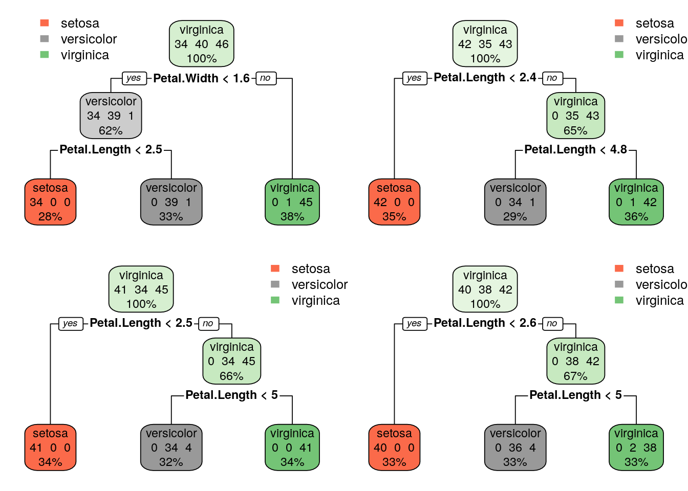

Para reduzir o efeito de variancia na acurácia vamos utilizar uma floresta aleatória, isto é, um conjunto de várias árvores de decisão onde cada arvore da o seu valor para a acurácia e no final é feita a média geral considerando todas as arvores.
tamanhoFloresta =4par(mfrow=c(2,2))# criar uma amostra para cada arvore para ter a certeza que cada arvore tem uma amostra diferente, garantindo que a arvore não vai ser treinada com os mesmos dadosfor(i in1:tamanhoFloresta){ amostra = treino[sample(1:120, replace=TRUE, size=120),] arvore =rpart(formula=Species ~., data=amostra)if(i==1){ floresta = arvore }else{ floresta =rbind(floresta, arvore) }rpart.plot(arvore, extra=101)}

Vamos criar uma floresta aleatória de verdade com a biblioteca randomForest
tamanhoFloresta =200floresta.iris =randomForest(formula = Species ~., data=treino, ntree=tamanhoFloresta)floresta.iris
Call:
randomForest(formula = Species ~ ., data = treino, ntree = tamanhoFloresta)
Type of random forest: classification
Number of trees: 200
No. of variables tried at each split: 2
OOB estimate of error rate: 3.33%
Confusion matrix:
setosa versicolor virginica class.error
setosa 40 0 0 0.00000000
versicolor 0 33 2 0.05714286
virginica 0 2 43 0.04444444
# OOB = Out Of Bag: estimativa de quantos itens da amostra não foram usados para treinar a arvoreprevisao.florestas =predict(floresta.iris, newdata=teste, type='class')mean(previsao.florestas == teste$Species)
[1] 0.9666667
plot(floresta.iris)
Agora vamos mudar o conjunto de dados para o train_digits
treino.digitos =read.csv("train_digits.csv", header=TRUE)# summary(treino.digitos)# obter as informações da linha 8 numero =as.numeric(treino.digitos[8, -1]) numero